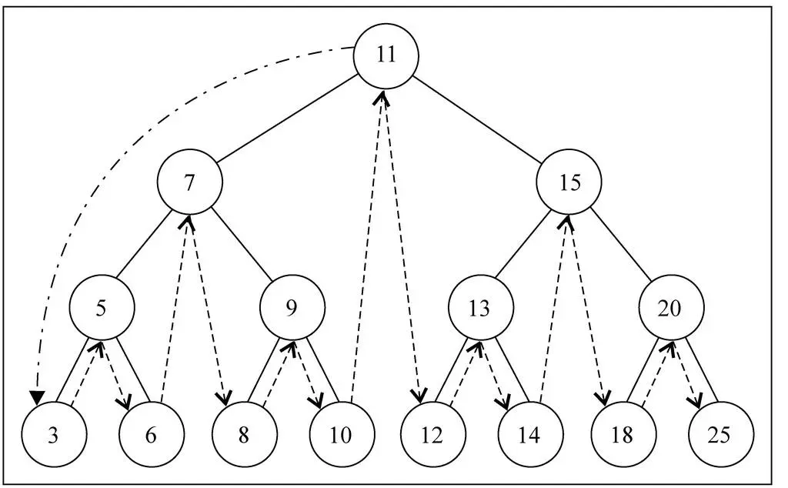
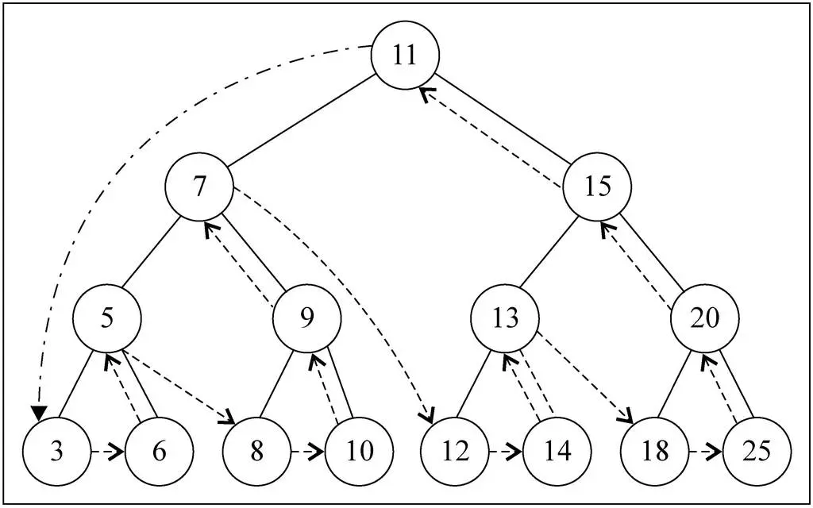

什么是二叉搜索树
二叉搜索树特点
- 二叉搜索树（BST，Binary Search Tree），也称二叉排序树或二叉查找树
- 二叉搜索树是一颗二叉树, 可以为空；如果不为空，满足以下性质
- 非空左子树的所有键值小于其根结点的键值
- 非空右子树的所有键值大于其根结点的键值
- 左、右子树本身也都是二叉搜索树
- 二叉搜索树特点
- 对较小的值总是保存在左结点上
- 相对较大的值总是保存在右结点上
- 查找效率非常高, 这也是二叉搜索树中, 搜索的来源
二叉搜索树遍历
- 先序遍历（根节点在第一位）
- 访问根结点
- 先序遍历其左子树
- 先序遍历其右子树
- 中序遍历（根节点在中间）
- 中序遍历其左子树
- 访问根结点
- 中序遍历其右子树
- 后序遍历（根节点在最后）
- 后序遍历其左子树
- 后序遍历其右子树
- 访问根结点
二叉搜索树的操作
- insert(key)：向树中插入一个新的键。
- search(key)：在树中查找一个键，如果结点存在，则返回true；如果不存在，则返回false。
- inOrderTraverse：通过中序遍历方式遍历所有结点。
- preOrderTraverse：通过先序遍历方式遍历所有结点。
- postOrderTraverse：通过后序遍历方式遍历所有结点。
- min：返回树中最小的值/键。
- max：返回树中最大的值/键。
- remove(key)：从树中移除某个键
二叉搜索树的实现
创建二叉搜索树
先来封装一个BinarySearchTree的类
1 | // 创建BinarySearchTree |
向树中插入数据
1 | // 向树中插入数据 |
*按照下面的代码插入, 最后形成什么样的树
1 | // 测试代码 |
- 如果这个时候, 我新插入一个数据6,
1 | bst.insert(6) |
遍历二叉树
先序遍历
- 遍历树最好用的办法就是递归, 因为每个节点都可能有自己的子节点, 所以递归调用是最好的方式.
- 在先序遍历中, 我们在经过节点的时候, 会先将该节点打印出来.
- 然后, 我们会遍历节点的左子树, 再然后遍历节点的右子树.
- handler处理遍历出来节点的函数
1 | // 遍历方法 |

1 | // 测试前序遍历结果 |
中序遍历
1 | // 中序遍历 |

1 | // 测试中序遍历结果 |
后序遍历
1 | // 后序遍历 |

1 | // 测试后续遍历结果 |
最大值和最小值
- 代码依次向左找到最左边的结点就是最小值,
- 代码依次向右找到最右边的结点就是最大值.

- 获取最小值
1 | // 获取最大值和最小值（一直沿着二叉树往左找，最左面的值） |
- 获取最大值
1 | // （一直沿着二叉树往右找，最右面的值） |
搜索是否存在特定的值
1 | BinarySerachTree.prototype.search = function (key) { |
删除
- 删除节点要从查找要删的节点开始, 找到节点后, 需要考虑三种情况:
- 该节点是也结点(没有字节点, 比较简单)
- 该节点有一个子节点(也相对简单)
- 该节点有两个子节点.(情况比较复杂)
查找要删除的节点
- current: 用于一会儿找到的要删除的节点对应的node.
- parent: 用于保存current节点的父节点. 因为如果current有子节点, 那么在删除current节点的时候, 必然需要将parent的left或者right指向它的某一个子节点. 所以需要保存起来current的parent. (树中的节点关系不能向上的, 和链表非常相似)
- isLeftChild: boolean类型,它用户记录我们是在current是在父节点的左侧还是右侧, 以便到时候设置parent的left或者right
1 | // 删除结点 |
删除的是叶子节点
- 需要检测current的left以及right是否都为null.
- 是否current就是根, 都为null, 并且为跟根, 那么相当于要清空二叉树(只是清空了根, 因为只有它).
- 否则就把父节点的left或者right字段设置为null即可
1 | // 3.删除的结点是叶结点（直接给这个系欸但的） |
一个子节点
- 要删除的current结点, 只有2个连接(如果有两个子结点, 就是三个连接了), 一个连接父节点, 一个连接唯一的子节点.
- 需要从这三者之间: 爷爷 - 自己 - 儿子, 将自己(current)剪短, 让爷爷直接连接儿子即可.
- 这个过程要求改变父节点的left或者right, 指向要删除节点的子节点.
- 在这个过程中还要考虑是否current就是根.
1 | // 4.删除有一个子节点的节点 |
两个子节点
- 如果我们要删除的节点有两个子节点, 甚至子节点还有子节点, 这种情况下我们需要从下面的子节点中找到一个节点, 来替换当前的节点.
- 但是找到的这个节点有什么特征呢? 应该是current节点下面所有节点中最接近current节点的.
- 要么比current节点小一点点, 要么比current节点大一点点.
- 总结你最接近current, 你就可以用来替换current的位置.
- 这个节点怎么找呢
- 比current小一点点的节点, 一定是current左子树的最大值.
- 比current大一点点的节点, 一定是current右子树的最小值.
- 前驱&后继
- 比current小一点点的节点, 称为current节点的前驱.
- 比current大一点点的节点, 称为current节点的后继.
- 也就是为了能够删除有两个子节点的current, 要么找到它的前驱, 要么找到它的后继
- 这里以找后继为例
找后继方法
- 对于删除9. 做法就是将7节点的right 赋值为 10. 10节点的left应该赋值为8即可.
- 对于删除15我们还缺少什么呢?
- 已经完成: 11的right指向了18, 18的right指向了13.
- 没有完成: 19怎么办? 20这个左子树怎么办?
- 很明显, 19应该放在20的左边, 20应该放在18的右边.
- 19放在20的左边代码: successorParent.left = successor.right
- 20放在18的右边代码: successor.right = delNode.right
1 | // 找后继的方法 |
找到后继节点后
1 | // 5.删除有两个节点的节点 |